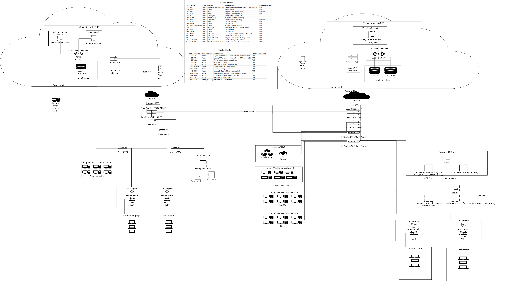

Infrastructure designs focused on reliability, segmentation, operational resilience,
and hybrid scalability across cloud and on-prem environments.
Design 1 — Secure Lab / Small Office Topology
NetworkSecurityResilience
A practical design for a home lab or small office where the goals are strong perimeter control,
centralized visibility (SIEM), and repeatable response (SOAR),
while keeping the environment easy to operate and document.
Design 2 — Business On-Prem Virtualized Environment
VirtualizationWAN FailoverCore Services
A traditional business infrastructure design with primary + backup ISP,
VMware-hosted server workloads, and centralized identity/services
to support internal applications and remote access.
Primary ISP + Backup ISP → Firewall → Switch (+ Backup Switch) → VMware Hosts → Server Workloads
├─ Domain Controller (Primary)
├─ Domain Controller (Secondary/Backup)
├─ Remote Desktop Services (Employees)
├─ QuickBooks Server (DB/App role)
├─ IIS Web Server
├─ SQL Server
├─ Linux Server (apps/services)
└─ Exchange Server (or migration path to M365)
Why This Design Works
ISP failover: continuity when the primary circuit fails (policy enforced at firewall).
Virtualization: consolidates workloads, improves recovery options, and supports scaling.
Identity-first: domain services enable centralized authentication, policy, and access control.
Remote access: RDS provides controlled access to internal tools without exposing services directly.
Role Breakdown (High-Level)
Domain Controllers: authentication, GPO, and often DNS (resilience with a secondary DC).
RDS: secure workspace access for employees and contractors.
QuickBooks Server: centralized accounting database/app access for multi-user workflows.
IIS: internal applications, web portals, or service endpoints.
SQL: database layer for business apps and services.
Linux: app runtimes, automation services, monitoring, or middleware.
Exchange: on-prem messaging or transitional hybrid model.
Operational Practices Typically Paired
Patch and change windows for servers and network infrastructure.
Backups (image + app-aware) and periodic restore testing.
Least privilege, RBAC, and administrative separation.
Network segmentation (VLANs) and restricted management access.
This reference diagram illustrates hybrid connectivity between on-prem infrastructure
and Azure cloud components, including segmented VLANs, firewall boundaries,
site-to-site VPN, and tiered server architecture.

Diagram is intentionally abstracted to avoid internal identifiers.
Architecture Highlights
Azure segmentation: separate tiers for app, web, admin access, and data services.
Site-to-Site VPN: secure connectivity between on-prem and cloud networks.
Firewall boundary: enforced policies for inbound/outbound traffic and inter-zone traffic.
Core services: identity services, remote access, and application/database tiers.
VLAN design: segmentation for user, server, and specialized device networks.